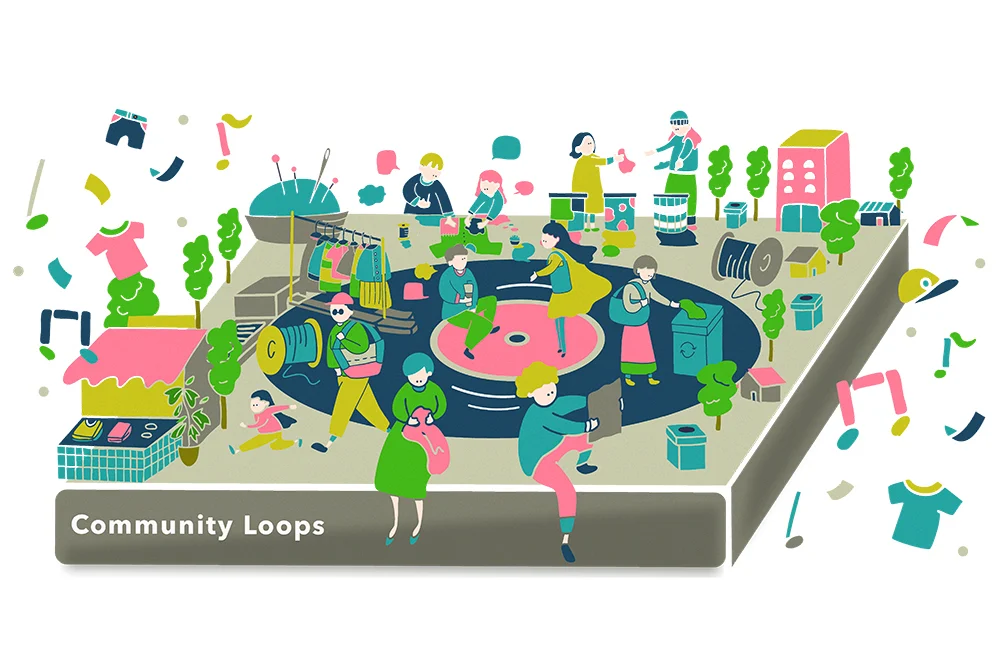

服がめぐり、人がつながる。地域発の衣類循環プロジェクト「Community Loops」。
「Community Loops」は、地域で集めた衣服を福祉事業所で分別・メンテナンスし、
必要に応じてリペアして再び地域で活かす、環境省のモデル実証事業です。
衣服を捨てずに、地域やコミュニティで循環させることで、環境への負荷を減らします。
さらに、リペアカフェやワークショップを通じて学生や市民が集い、人とのつながりも広がる。
環境にも、人にもやさしい、小さな循環をまちに育てていきます。
道用ゼミとこのプロジェクトがタッグを組んで、学生が主体となり、
衣類の循環を促進する新しいサービスを提案する。

提案サービス：「使わなくなった子供の服でワークショップ」
私は小さい子供がいる親御さんをターゲットに、子供服の循環を促進するサービスを提案しました。
子供服は成長が早く、1~2年ほどでサイズアウトしてしまうのに対し、
花王のアンケート調査では、大人は4~5年で服を捨てるという結果で出ています。